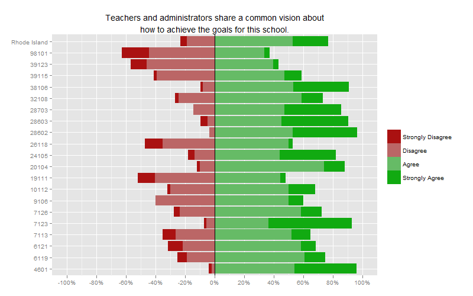
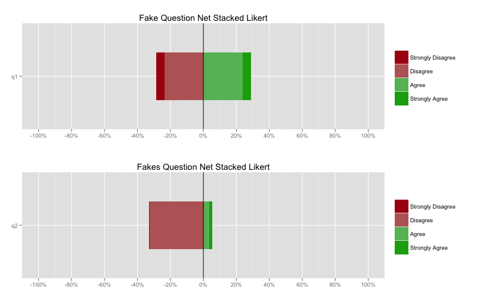

2012-07-10
See below for more information now that Ethan Brown has weighed in with some great code.
A recent post I came across on r-bloggers asked for input on visualizing ranked Likert-scale data.
I happen to be working on a substantial project using very similarly structured data so I thought I would share some code. In my efforts to be generic as possible, I decided to generate some fake data from scratch. As I peeled away the layers of context-specific aspects of my nearing-production level code, I ran into all kinds of trouble. So I apologize for the somewhat sloppy and unfinished code2.
 1
My preferred method for visualizing Likert-scale data from surveys is using net stacked distribution graphs. There are two major benefits of these kinds of graphs. First, they immediately draw attention to how strongly respondents feel about a question, particularly when multiple questions are visualized at once. The total width of any bar is equal to the total number of responded who had a non-neutral answer. Second, these graphs make it very easy to distinguish between positive and negative responses. In some cases, it is critical to view the distribution of data to visualize the differences in responses to one question or another. However, most of the time it is informative enough to simply know how positive or negative responses are. I find this is particularly true with 3, 4, and 5-point Likert scales, the most common I come across in education research.
Anyway, without further ado, some starter code for producing net stacked distribution graphs.
require(ggplot2)
require(scales)
require(plyr)
dataSet <- data.frame(
q1=as.ordered(round(runif(1500, 1, 15) + runif(1500,1,15))),
q2=as.ordered(round(runif(1500, 1, 15) + runif(1500,1,15))))
dataSet[['q1']] <- with(dataSet, ifelse(q1<7,1,
ifelse(q1>=7 & q1<13,2,
ifelse(q1>=13 & q1<20,3,
ifelse(q1>=20 & q1<26,4,5)))))
dataSet[['q2']] <- with(dataSet, ifelse(q2<3,1,
ifelse(q2>=3 & q2<14,2,
ifelse(q2>=14 & q2<26,3,
ifelse(q2>=26 & q2<28,4,5)))))
dataSet[['q1']] <- as.ordered(dataSet[['q1']])
dataSet[['q2']] <- as.ordered(dataSet[['q2']])
levels(dataSet[['q1']]) <- c('Strongly Disagree',
'Disagree',
'Neither Agree or Disagree',
'Agree',
'Strongly Agree')
levels(dataSet[['q2']]) <- c('Strongly Disagree',
'Disagree',
'Neither Agree or Disagree',
'Agree',
'Strongly Agree')
# Convert the integer levels to have meaning.
q1Proportions <- data.frame(Name='q1', prop.table(table(dataSet[['q1']])))
q2Proportions <- data.frame(Name='q2', prop.table(table(dataSet[['q2']])))
# Produces a data frame with the proportions of respondents in each level.
# ggplot2 function for graphs
visualize <- function(data,
responses=c('Strongly Disagree',
'Disagree',
'Neither Agree or Disagree',
'Agree',
'Strongly Agree'),
desc='Title',
rm.neutral=TRUE){
# This function will create net stacked distribution graphs. These are
# a particularly useful visualization of Likert data when there is a neutral
# option available and/or when emphasizing the difference between positive and
# negative responses is a goal.
# Args:
# data: This is a dataframe with percentages labeled with responses.
# responses: This is a vector with the response labels.
# desc: This is the title of the output ggplot2 graphic, typically the
# question text.
# rm.neutral: This is a single element logical vector that determines if the
# neutral response should be removed from the data. The default
# value is TRUE.
for(i in 1:ceiling(length(responses)/2)-1){
# This loop negates all the negative, non-neutral responses regardless of
# the number of possible responses. This will center the non-neutral
# responses around 0.
data[i,3] <- -data[i,3]
}
if(rm.neutral==T){
data <- ddply(data,.(Name), function(x) x[-(ceiling(length(responses)/2)),])
responses <- responses[-(ceiling(length(responses)/2))]
}
else{
}
print(data)
stackedchart <- ggplot() +
layer(data=data[1:2,],
mapping=aes(Name,Freq,fill=Var1,order=-as.numeric(Var1)),
geom='bar',
position='stack',
stat='identity')
stackedchart <- stackedchart +
layer(data=data[3:4,],
mapping=aes(Name,Freq,fill=Var1,order=Var1),
geom='bar',
position='stack',
stat='identity')
stackedchart <- stackedchart +
geom_hline(yintercept=0) +
opts(legend.title=theme_blank()) +
opts(axis.title.x=theme_blank()) +
opts(axis.title.y=theme_blank()) +
opts(title=desc) +
scale_y_continuous(labels=percent,
limits=c(-1,1),
breaks=seq(-1,1,.2)) +
scale_fill_manual(limits=responses,
values=c('#AA1111',
'#BB6666',
'#66BB66',
'#11AA11')) +
coord_flip()
stackedchart
}
And the results of all that?

So now that Ethan has weighed in with his code I thought I would add some things to make this post better reflect my production code. Below, I have included my comment on his blog as well as an actual copy of my current production code (which definitely is not sufficiently refactored for easy use across multiple projects). Again, excuse what I consider to be incomplete work on my part. I do intend on refactoring this code and eventually including it in my broader set of custom functions available across all of my projects. I suspect along that path that I will be “stealing” some of Ethan’s ideas.
Hi Ethan! Super excited to see this post. This is exactly why I put up my code— so others could run with it. There are a few things that you do here that I actually already had implemented into my code and removed in an attempt to be more neutral to scale that I really like.
For starters, in my actual production code I also separate out the positive and negative responses. In my code, I have a parameter called scaleName that allows me to switch between all of the scales that are available in my survey data. This includes Strongly Disagree to Strongly Agree (scaleName=='sdsa'), Never -> Always (scaleName=='sdsa') and even simple yes/no (scaleName=='ny'). This is not ideal because it does require 1) knowing all possible scales and including some work in the function to treat them differently 2) including an additional parameter. However, because I use this work to analyze just a few surveys, the upfront work of including this as a parameter has made this very flexible in dealing with multiple scales. As a result, I do not need to require that the columns are ordered in any particular way, just that the titles match existing scales. So I have a long set of if elseif statements that look something like this:
if(scaleName=='sdsa'){
scale <- c('Strongly Disagree','Disagree','Agree','Strongly Agree')
pos <- c('Agree','Strongly Agree')
neg <- c('Strongly Disagree','Disagree')
}
This is actually really helpful for producing negative values and including some scales in my function which do not have values that are negative (so that it can be used for general stacked charts instead of just net-stacked):
if(length(neg)>0){
quest[,names(quest) %in% c(neg)] <- -(quest[,names(quest) %in% c(neg)])
(Recall that quest is what I call the dataframe and is equivalent to x in your code)
Another neat trick that I have instituted is having dynamic x-axis limits rather than always going from -100 to 100. I generally like to keep my scales representing the full logical range of data (0 - 100 for percentages, etc) so I might consider this a manipulation. However, after getting many charts with stubby centers, I found I was not really seeing sufficient variation by sticking to my -100 to 100 setup. So I added this:
pos_lims =0)+1))[1,]),
sum(subset(quest,select=c(which(quest[2,-1]>=0)+1))[2,])))
neg_lims <- max(abs(c(sum(subset(quest,
select=c(which(quest[1,-1]<=0) + 1))[1,]),
sum(subset(quest,select=c(which(quest[2,-1]<=0)+1))[2,]))))
x_axis_lims <- max(pos_lims,neg_lims)
Which helps to determine the value furthest from 0 in either direction across the data frame (I have to admit, this code looks a bit like magic reading it back. My comments actually are quite helpful:
# pos_lims and neg_lims subset each row of the data based on sign, then
# sums the values that remain (gettting the total positive or negative
# percentage for each row). Then, the max of the rows is saved as a candidate
# for the magnitude of the axis.
To make this more generalizable (my production code always compares two bars at once) , it would be fairly trivial to loop over all the rows (or use the apply functions which I’m still trying to get a hang of).
I then pad the x_limits value by some percent inside the limits attribute.
In my production code I also have the scale_fill_manual attribute
added separately to the ggplot object. However, rather than add this
after the fact like at the point of rendering, I include this in my
function again set by scaleName. However, I think the best organization
is probably to have a separate function that makes it easy to select the
color scheme you want and apply it so that your final call could be
something like colorNetStacked(net_stacked(x), 'blues').
My actual final return looks like this:
return(stackedchart + scale_fill_manual(limits=scale,
values=colors) +
coord_flip())
Where colors is set by a line like: colors <- brewer.pal(name='Blues',n=7)[3:7]
Seriously though, I am super excited you found my post and thought it was useful and improved what I presented!
visualize <- function(quest,scaleName='sdsa',desc){
# Produces the main net-stacked Likert graphic used for survey data in the
# diagnostic tool
# Args:
# quest: data.frame from pull() or pullByLevel() output
# scaleName: string code for the type of scale that is used for the question.
# desc: string for the title that will be displayed on the graphic.
# Returns:
# Net-Stacked Likert chart with a bar/row for each row in quest. Most scales
# center around 0 with a distinct positive and negative set of responses.
# The graphs are custom colored based on what best reflects the scale.
# The x-axis limits are set dynamically based on a 10% buffer of the largest
# magnitude to either the positive or negative responses.
if(scaleName=='sdsa'){
scale <- c('Strongly Disagree','Disagree','Agree','Strongly Agree')
pos <- c('Agree','Strongly Agree')
neg <- c('Strongly Disagree','Disagree')
}else if(scaleName=='da'){
scale <- c('Disagree','Agree')
pos <- c('Agree')
neg <- c('Disagree')
}else if(scaleName=='neal'){
scale <- c('Never','Sometimes','Usually','Always')
pos <- c('Usually','Always')
neg <- c('Never','Sometimes')
}else if(scaleName=='noalot'){
scale <- c('None','A Little','Some','A Lot')
pos <- c('None','A Little','Some','A Lot')
neg <- c()
}else if(scaleName=='noall'){
scale <- c('None of them','Some','Most','All of them')
pos <- c('None of them','Some','Most','All of them')
neg <- c()
}else if(scaleName=='neda'){
scale <- c('Never','A Few Times a Year','Monthly','Weekly','Daily')
pos <- c('Never','A Few Times a Year','Monthly','Weekly','Daily')
neg <- c()
}else if(scaleName=='ny'){
scale <- c('No','Yes')
pos <- c('Yes')
neg <- c('No')
}else{
print('Unrecognized Scale Name')
}
# Remove neutral and non-response based values in the pull tables like
# n-size, Not Applicable, etc.
quest <- quest[,!names(quest) %in%
c('n','Not Applicable',"I don't know")]
# Produce values less than 0 for negative responses
if(length(neg)>0){
quest[,names(quest) %in% c(neg)] <-
-(quest[,names(quest) %in% c(neg)])
# pos_lims and neg_lims subset each row of the data based on sign, then
# sums the values that remain (gettting the total positive or negative
# percentage for each row). Then, the max of the rows is saved as a candidate
# for the magnitude of the axis.
pos_lims <- max(c(sum(subset(quest,select=c(which(quest[1,-1]>=0)+1))[1,]),
sum(subset(quest,select=c(which(quest[2,-1]>=0)+1))[2,])))
neg_lims <- max(abs(c(sum(subset(quest,select=c(which(quest[1,-1]<=0)+1))[1,]),
sum(subset(quest,select=c(which(quest[2,-1]<=0)+1))[2,]))))
# The actual magnitude of the axis is the largest magnitude listed in pos_lims
# or neg_lims, and will be inflated by .1 in each direction in the scale later
x_axis_lims <- max(pos_lims,neg_lims)
}else{
}
# Reshape the data so that each row has one value with a variable label.
quest <- melt(quest,id.vars='Var1')
# Factoring and ordering the response label ensures they are listed in the
# proper order in the legend and on the stacked chart, i.e. strongly disagree
# is furthest left and strongly agree is furthest right.
quest[['variable']] <- factor(quest[['variable']],
levels=scale,
ordered=TRUE)
# Build the plot using ggplot(). Layers are used so that positive and negative
# can be drawn separately. This is important because the order of the negative
# values needs to be switched.
##### Control flow required to change the behavior for the questions that
##### business requirements call for 0-100 scale with no indication of
##### positive or negative, i.e. the neda, noalot, and noall scaleName.
stackedchart <- ggplot() +
layer(data=subset(quest,
variable %in% pos),
mapping=aes(Var1,
value,
fill=factor(variable)),
geom='bar',
stat='identity',
position='stack') +
geom_hline(yintercept=0) +
opts(legend.title=theme_blank()) +
opts(axis.title.x=theme_blank()) +
opts(axis.title.y=theme_blank()) +
opts(title=desc)
if(length(neg)>0){
stackedchart <- stackedchart +
layer(data=subset(quest,
variable %in% neg),
mapping=aes(Var1,
value,
fill=factor(variable),
order=-as.numeric(variable)),
geom='bar',
stat='identity',
position='stack')
}else{
}
if(scaleName %in% c('sdsa','neal')){
colors <- c('#AA1111','#BB6666','#66BB66','#11AA11')
stackedchart <- stackedchart +
scale_y_continuous(labels=percent,
limits=c(-x_axis_lims-.1, x_axis_lims+.1),
breaks=seq(-round(x_axis_lims,1)-.1,
round(x_axis_lims,1)+.1,
.2))
}else if(scaleName %in% c('ny','da')){
colors <- c('#BB6666','#66BB66')
stackedchart <- stackedchart +
scale_y_continuous(labels=percent,
limits=c(-x_axis_lims-.1, x_axis_lims+.1),
breaks=seq(-round(x_axis_lims,1)-.1,
round(x_axis_lims,1)+.1,
.2))
}else if(scaleName %in% c('noalot','noall')){
colors <- brewer.pal(name='Blues',n=6)[3:6]
stackedchart <- stackedchart +
scale_y_continuous(labels=percent,
limits=c(0,1.05),
breaks=seq(0,1,.1))
}else if(scaleName %in% c('neda')){
colors <- brewer.pal(name='Blues',n=7)[3:7]
stackedchart <- stackedchart +
scale_y_continuous(labels=percent,
limits=c(0,1.05),
breaks=seq(0,1,.1))
}else{
print('Unrecognized scaleName')
}
return(stackedchart + scale_fill_manual(limits=scale,
values=colors) +
coord_flip())
}
Net Stacked Likert graphs are excellent for comparing how different groups responded to the same question. There is both high information density and clarity. ↩
Mainly, I would like to abstract this code further. I am only about halfway there to assuring that I can use Likert-scale data of any size. I also would like to take in more than one question simultaneously with the visualize function. The latter is already possible in my production code and is particularly high impact for these kinds of graphics ↩